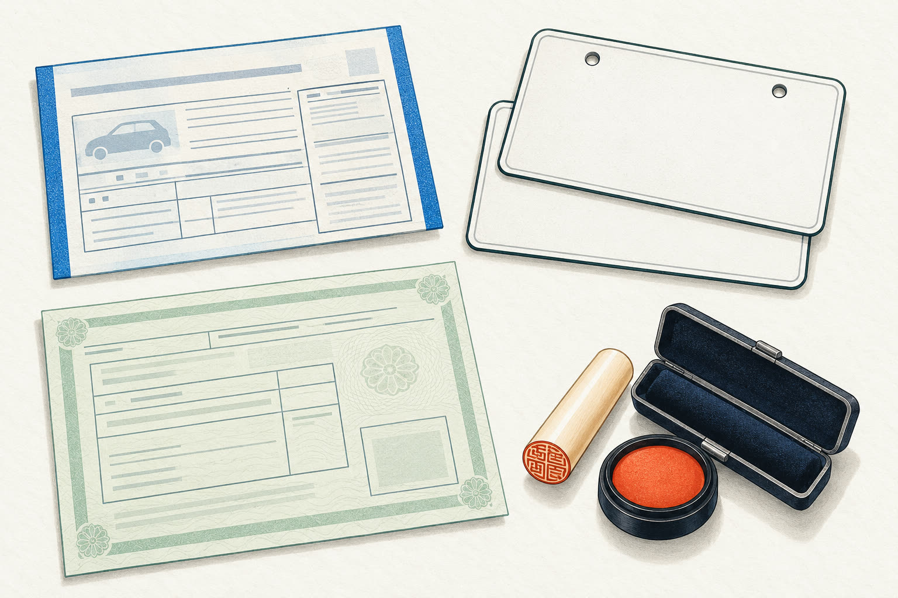
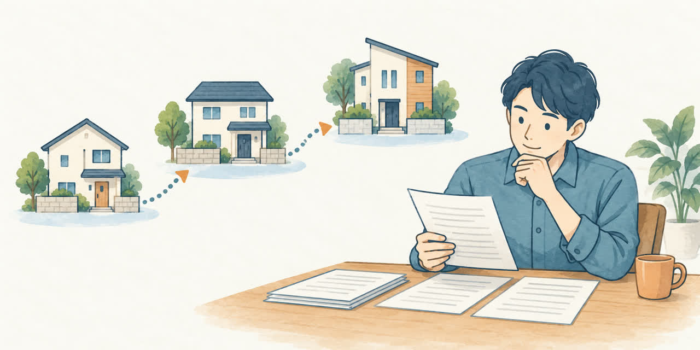
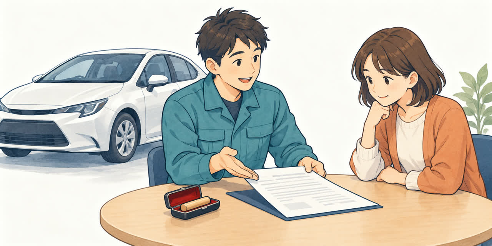

普通車の廃車をお考えの方へ
廃車に必要な
書類チェックリスト（普通車）
公開

こんにちは、足立区江北で自動車解体・廃車買取をしている「大崎商店 環七店」です。
「車を手放したいけれど、廃車にはどんな書類が必要？」
「引っ越してから車検証の住所を変えていないけれど、大丈夫？」
そんな疑問にお答えするため、廃車をご依頼いただく際の準備をチェックリストにまとめました。
この記事では、ご本人名義の普通車（軽自動車を除く）を、当店に廃車依頼される場合の基本的な準備をご案内します。住所や氏名の変更、所有者の名義などによって、必要な書類は異なります。
※軽自動車の場合に必要なものは、この記事の「軽自動車の場合は、基本の2点です」でご紹介しています。
まず確認したい、基本の4点
ご相談・お引き渡しに向けて、次の4点をご確認ください。
- □ 自動車検査証（車検証）の原本
- □ ナンバープレート（前後2枚）の有無
- □ 所有者の印鑑登録証明書（印鑑証明）
- □ 印鑑証明に登録されている実印

書類に不足があっても、まずはご相談ください。車検証の情報やお車の状況を確認したうえで、必要な準備をご案内します。
※すでに一時抹消登録をしている車は、必要な書類が異なります。お問い合わせの際にお知らせください。
軽自動車の場合は、基本の2点です
軽自動車の場合は、基本的に次の2点をご用意ください。
- □ 車検証の原本（電子車検証の場合も原本が必要です）
- □ ナンバープレート（前・後ろの2枚）（取り外しについては当店にご相談ください）
軽自動車では、印鑑登録証明書や実印は不要です。所有者が販売店やローン会社などになっている場合は、事前に当店へお知らせください。詳しくは「軽自動車の廃車に必要な書類・準備チェックリスト」もご覧ください。
① 自動車検査証（車検証）
車検証はコピーではなく、原本をご用意ください。 助手席前の収納（グローブボックス）などにある車検証入れを確認してみましょう。
ICタグ付きの「電子車検証」の場合も、原本が必要です。電子車検証の券面には所有者情報などが表示されないため、詳細は「車検証閲覧アプリ」や「自動車検査証記録事項」で確認できます。記録事項の用紙をお持ちであれば、車検証と一緒にご用意いただくと確認がスムーズです。
車検証が見つからない場合は、再交付などの対応が必要になることがあります。ご自身で手続きを進める前に、当店へご相談ください。
② ナンバープレート（前後2枚）
登録されている普通車の抹消手続きでは、通常、前後2枚のナンバープレートを返納します。
まずは、前後2枚が車に付いているかをご確認ください。取り外しやお引き渡しの方法は、ご相談の際にご案内します。
紛失や盗難などでナンバープレートがない場合は、追加の確認や書類が必要になるため、事前にお知らせください。
③ 印鑑登録証明書（印鑑証明）
印鑑証明は、登録されている実印を証明する書類です。車検証上の所有者のものをご用意ください。「使用者」と「所有者」が異なる場合は、先に当店へご相談ください。
抹消登録の申請時点で、発行から3か月以内のものが必要です。引き取りまで期間が空く場合もあるため、取得する時期はご相談時に確認していただくと安心です。
足立区で印鑑登録をしている方は、区役所や区民事務所などで取得できます。有効な利用者証明用電子証明書が入ったマイナンバーカードと暗証番号があれば、コンビニのマルチコピー機でも取得できます。
④ 実印
印鑑証明に登録されている印鑑をご用意ください。当店で使用する委任状などへの押印に必要です。
普段使っている認印ではなく、印鑑証明の印影と一致する実印かどうかをご確認ください。
委任状・譲渡証明書は当店で用意します
当店へのお引き渡し・手続きに使用する委任状や譲渡証明書は、当店で用意します。お客様が事前に用紙を探したり、印刷したりする必要はありません。
車の引き取り時に書類をお持ちしますので、内容をご確認のうえ、必要事項の記入と実印の押印をお願いします。 当日は実印を手元にご用意ください。
委任状は手続きの代行を依頼するための書類、譲渡証明書は車の譲渡に使用する書類です。必要な書類と記入箇所は、お引き渡しの内容に合わせてご案内します。引き取り当日の流れは「廃車のご依頼から現金お支払いまでの流れ」でもご紹介しています。
追加の書類や確認が必要になるケース

車検証の住所と現在の住所が異なる場合
車検証上の所有者の住所と印鑑証明の住所が異なる場合は、住所のつながりを確認できる書類が必要です。
住民票の写しに記載された前住所などで、車検証の住所から現在の住所までのつながりを確認できれば、住所変更の証明に使えます。
引っ越しを複数回しているなど、現在の住民票だけでは確認できない場合は、戸籍の附票や住民票の除票などが必要になることがあります。他県からの引っ越しかどうかではなく、住所の履歴を確認できるかが判断のポイントです。
取得する書類で迷ったら、車検証をお手元にご用意のうえ、先にご相談ください。
結婚などで氏名が変わった場合
車検証上の所有者の氏名と印鑑証明の氏名が異なる場合は、氏名変更の経緯がわかる戸籍謄本・抄本などが必要になることがあります。現在の氏名だけでなく、変更前の氏名とのつながりを確認できる書類をご案内します。
所有者が販売店・ローン会社・ご家族などの場合
ご自身が使っている車でも、所有者が販売店やローン会社になっていることがあります。この場合は、ご本人の印鑑証明と実印を用意するだけでは手続きを進められません。所有者側の書類や、所有権解除などの確認が必要です。
ご家族名義の車や、所有者が亡くなっている車も、必要な書類が異なります。書類を取得する前に、名義の状況をお知らせください。
税金の還付などもあわせて相談したい場合
還付などの手続きでは、振込先口座の情報や別途書類が必要になることがあります。ご希望の方は、お問い合わせの際にお伝えください。
【保存版】廃車書類チェックリスト
ご準備の際は、以下のリストをご活用ください。
基本的にご用意・確認いただくもの
- □ 車検証の原本（電子車検証も原本）
- □ ナンバープレート前後2枚の有無
- □ 所有者の印鑑証明（申請時点で発行から3か月以内）
- □ 印鑑証明に登録されている実印
当店で用意するもの
- □ 委任状などの手続き書類
- □ 譲渡証明書（譲渡の内容に応じて使用）
引き取り時に内容を確認し、必要事項の記入と実印の押印をお願いします。
当てはまる方は事前に相談
- □ 住所が変わっている → 住民票の写し、戸籍の附票、住民票の除票など
- □ 氏名が変わっている → 戸籍謄本・抄本など
- □ 所有者が販売店・ローン会社・ご家族などになっている
- □ 所有者が亡くなっている
- □ 車検証やナンバープレートが見つからない
- □ すでに一時抹消登録をしている
- □ 税金の還付なども相談したい
※必要な書類は、お車の登録状況や手続きの内容によって異なります。追加書類は、ご相談後に取得していただくと準備がスムーズです。
書類のことで迷ったら、大崎商店にご相談ください

「自分の場合は何を用意すればいい？」「車検証の住所が古いまま」「家族名義の車を処分したい」など、気になることはお気軽にご相談ください。
大崎商店は、足立区で自動車解体・廃車買取を行っているお店です。書類の準備から車の引き取りまで、わかりやすくご案内します。
- 廃車手続きの代行手数料は無料
- 環七店から車で片道約50分圏内は無料引き取り（東京23区・埼玉県南部・千葉県西部など。所在地を伺ってご案内します）
- 事故車や動かない車もレッカー車で引き取り可能
- 車種や状態によっては、引き取り当日その場で現金買取も可能
古い車や車検が切れた車についても、まずはお電話ください。
電話で相談する 03-3854-4141大崎商店 環七店
電話：03-3854-4141
〒123-0872
東京都足立区江北7丁目1−3
営業時間：月〜土 10:30〜18:00
休業日：日曜・祝日
環七沿い／舎人ライナー
西新井大師西駅
大崎商店 入谷店
電話：03-3899-2837
〒121-0836
東京都足立区入谷7丁目5−11
営業時間：月〜土 9:30〜17:30
休業日：日曜・祝日・第2土曜
お電話の際は、「普通車の廃車の書類について」とお伝えいただくとスムーズです。車検証をお手元にご用意いただくと、名義や住所の確認もしやすくなります。
挿絵はイメージです。※参考：運輸支局の永久抹消登録案内／国土交通省・電子車検証の案内／足立区・コンビニ交付の案内